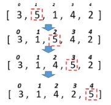

Домашнє завдання №12. Масиви - Алгоритми сортування масивів
Обов'язкові завдання
- Задача 1. Дано масив 30 випадкових цілих чисел. Підрахувати скільки було обмінів під час сортування бульбашкою
- Задача 2. Дано масив 30 випадкових цілих чисел. Підрахувати скільки було обмінів під час сортування змішуванням.
- Задача 3. Дано масив 30 випадкових цілих чисел. Підрахувати скільки було обмінів під час сортування включеннями.
-
Задача 4.
Для розглянутих методів сортування спробувати вивести етапи
сортування шляхом виведення відповідних таблиць за
зразком.
Тобто кожного разу після обміну елементів вивести поточний стан масиву на екран.
- Задача 5. Дано масив імен. Застосовуючи відповідне сортування та бінарний пошук визначити, чи є у масиві ім’я «Olga» і під яким індексом.
- Задача 6. Дано масив імен. Застосовуючи відповідне сортування та бінарний пошук визначити, чи є у масиві ім’я довжиною 5 символів і під яким індексом.